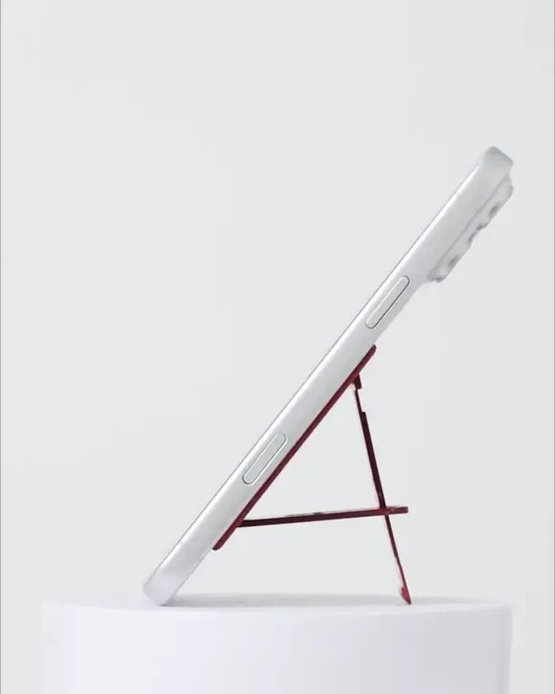
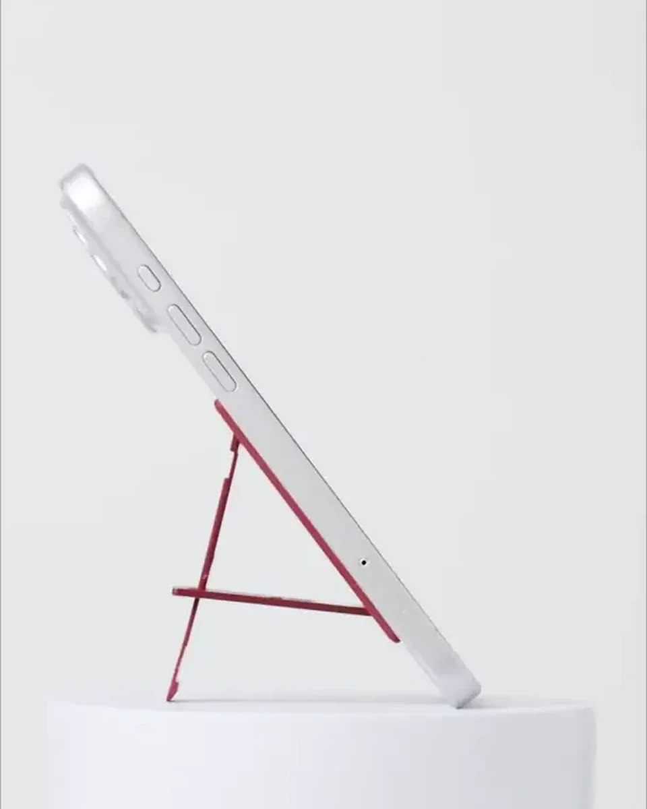
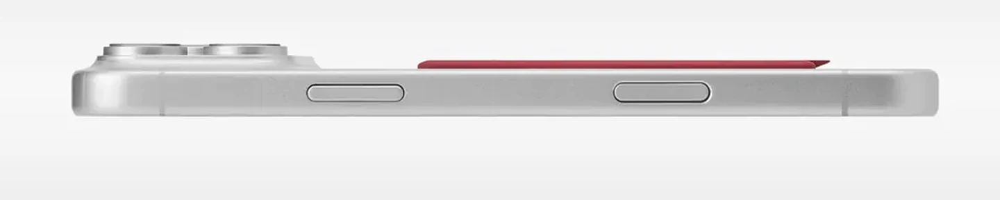
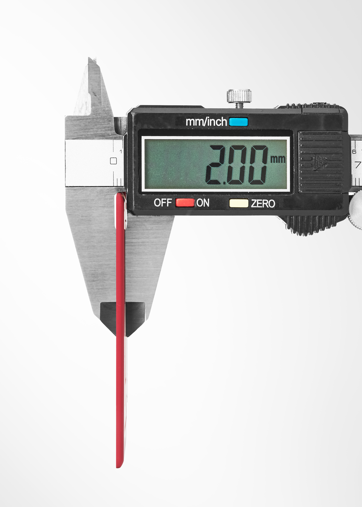
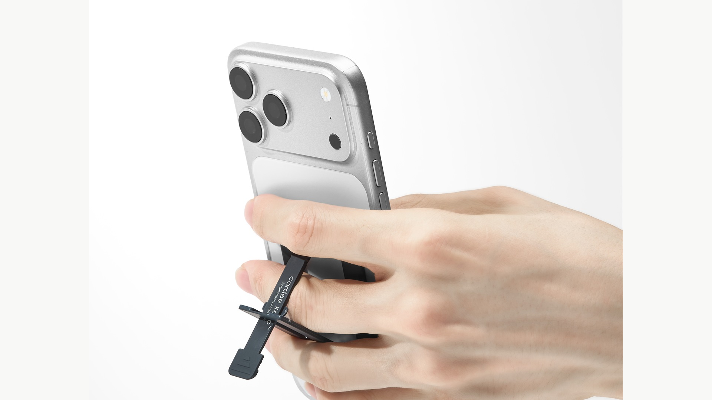
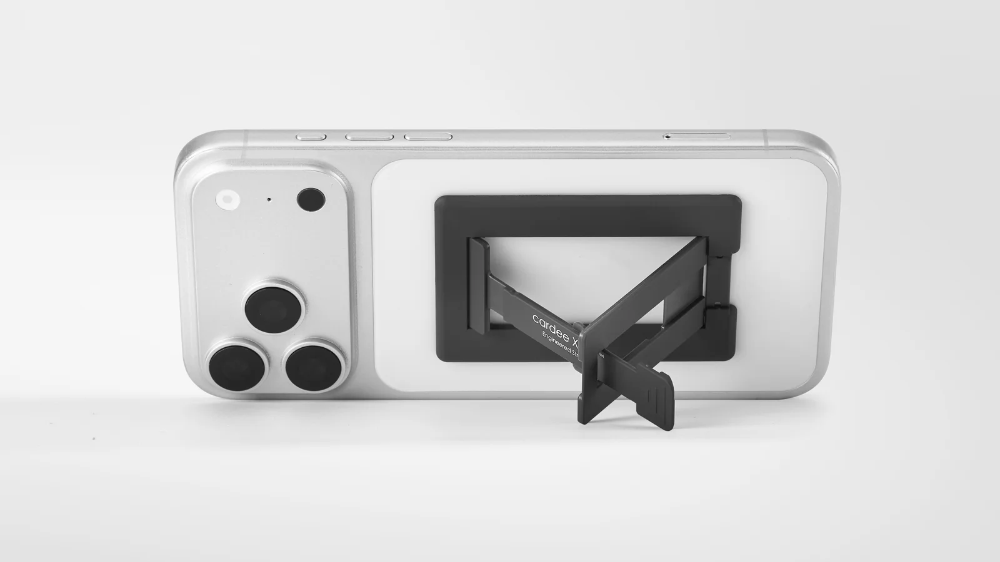
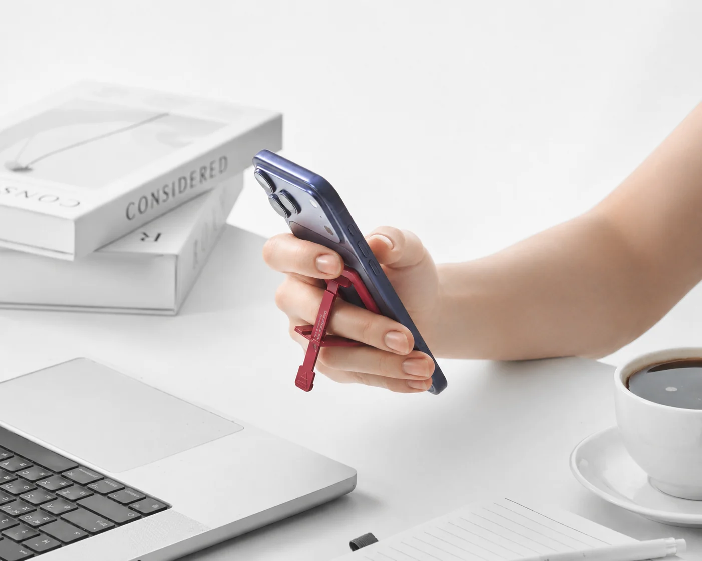
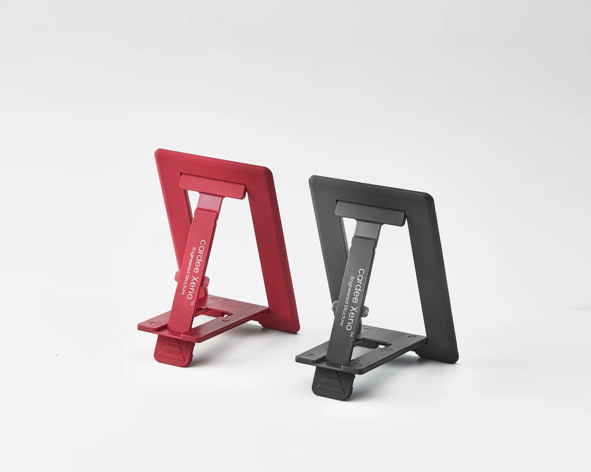

01 Every angle
2mm 초박형 구조. 붙인 듯, 안붙인 듯 언제나 부담없이.
스크롤을 움직여 제품의 모든 각도를 직접 확인해 보세요.
The 2.00mm phone stand
붙여도 부담 없는 2.00mm 초박형.
필요한 순간, 한 번에 펼쳐집니다.

Ultra slim profile
보이지 않을 만큼 얇게.필요한 순간에만 분명하게.




01 Every angle
스크롤을 움직여 제품의 모든 각도를 직접 확인해 보세요.
02 Always attached
정면에서 측면까지, 제품의 얇은 실루엣이 스마트폰의 형태를 따라 자연스럽게 이어집니다.
03 One move, ready
한 번의 동작으로 펼쳐지는 스탠드. 영상을 보고, 통화하고, 알림을 확인하는 각도가 완성됩니다.
Core details

Measured profile · 2.00 mmThinness
손안에서도, 주머니 속에서도 불필요한 부피를 만들지 않습니다.
 Attached profile · Ultra slim
Attached profile · Ultra slim
Attachment
카메라보다 낮은 프로파일. 스마트폰의 면과 자연스럽게 이어져 붙인 채로도 실루엣을 해치지 않습니다.

Stand & grip · Everyday readyGrip
스탠드를 펼치지 않은 순간에도 손가락을 걸어 편안하고 안정적인 그립을 만듭니다.

Portrait & landscape · Two waysOrientation
콘텐츠와 상황에 맞춰 세로 또는 가로로. 원하는 방향에 스마트폰을 편안하게 거치할 수 있습니다.
In hand, in life
있는 듯 없는 듯, 늘 함께하는 cardee Xeno. 손을 내미는 순간, 그 존재감을 드러냅니다. 바쁘게 일할 때도, 잠시 쉬어갈 때도.

Choose your tone
매일 손에 닿는 색까지, 당신의 취향으로.


Made with intention
매일 반복하는 동작부터 손끝에 닿는 표면까지. 작은 차이도 세심하게 다듬었습니다.